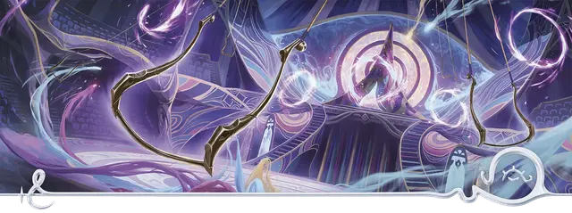

Член труппы Театра фантазмов
Phantasmic Circus Trouper

Характеристики Ловкость, Телосложение, Харизма
Черта Мистический артист
Навыки Выступление, Обман
Инструменты Набор для грима
Снаряжение Выберите А или Б: (А) Набор для грима, Игровой набор (любой), Костюм, Зеркало, Дорожная одежда, 12 ЗМ; или (Б) 50 ЗМ
Будь вы сами артистом или рабочим сцены, вы нашли пристанище в труппе Театра фантазмов. Ваши гастроли по всему миру несли чудеса и магию взбудораженным зрителям; вы отточили ваши таланты к представлению и отвлечению — и даже научились толике магии иллюзий.